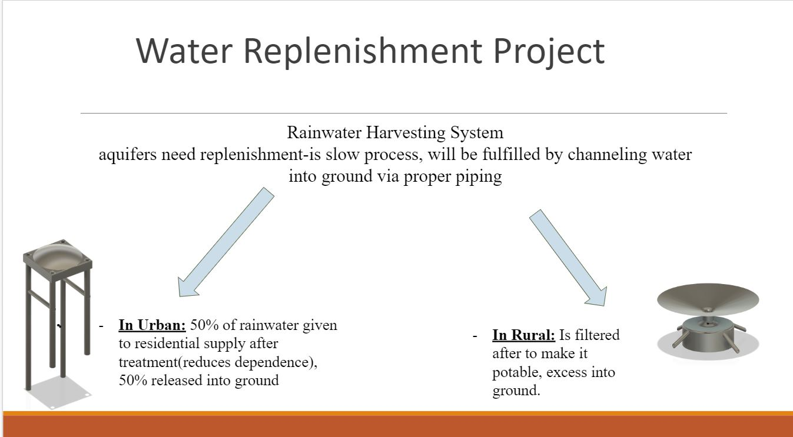
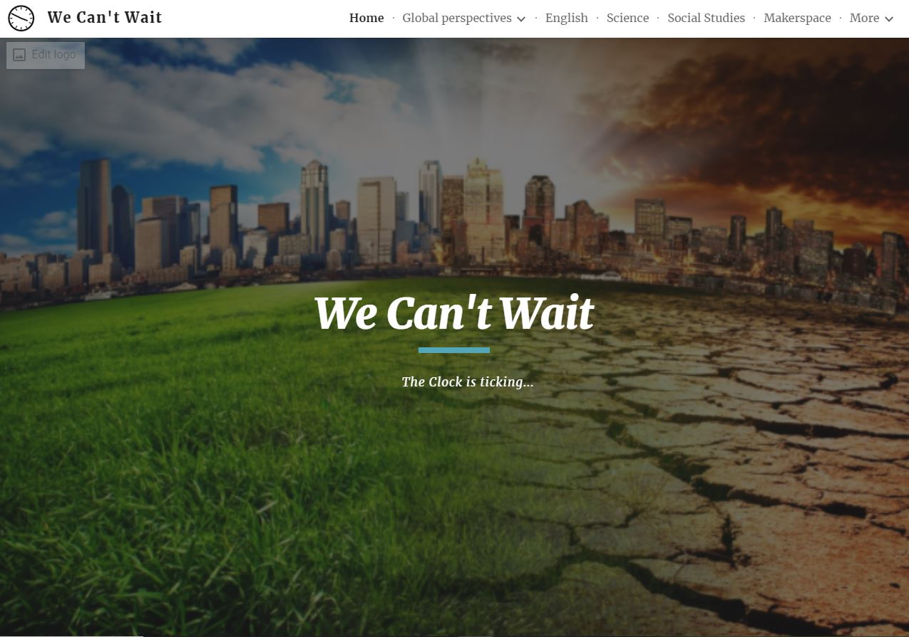

Shark Tank Presentation: In the subject of GP, we had to focus on an issue that is taking place around us,
and then design possible solutions towards it. The issue our crew focussed on, was ground water depletion, and water scarcity.
The solution we came up with, was a rainwater harvesting system, that would collect rainwtaer, filter it, get stored in a container,
be accessed by people, and drain into the ground, further increasing ground water levels, if it was in exces amount.
After this process, we also had to show our solution to experts, who will determine wether its good to be funded or not.
They also gave us detailed feedback based on the same. Below is an image that shows the 2 different rainwater harvesting
systems, both for rural and urban areas.

Grade End Culmination: At the end of Grade 8, we had a cumilative even called culmination. Before that, we
in our crews had prepared a website, using google sites as the software. This website included our major wqork in
all of the subjects. We presented this formaly infront of our parents.
